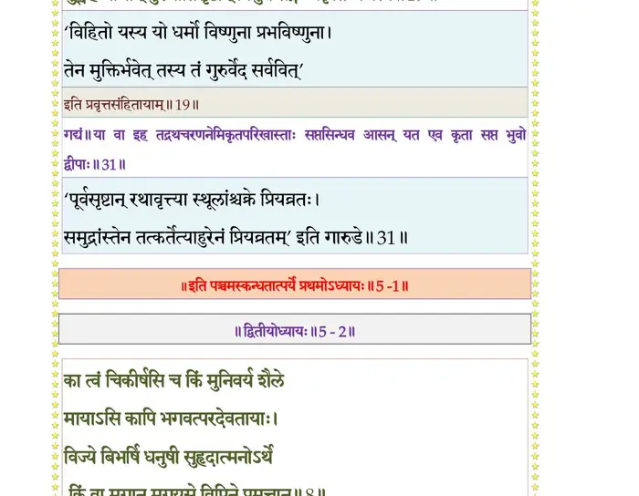

स्कन्ध 5 · अध्याय 1
श्लोक १
राजोवाच–
प्रियव्रतो भागवत आत्मारामः कथं मुने ।
गृहेऽरमत यन्मूलः कर्मबन्धः पराभवः ।। १ ।।
प्रियव्रतो भागवत आत्मारामः कथं मुने ।
गृहेऽरमत यन्मूलः कर्मबन्धः पराभवः ।। १ ।।
श्लोक २
न नूनं मुक्तसङ्गानां तादृशानां महामुने ।
गृहेष्वभिनिवेशोऽयं पुंसां भवितुमर्हति ।। २ ।।
गृहेष्वभिनिवेशोऽयं पुंसां भवितुमर्हति ।। २ ।।
श्लोक ३
महतां खलु विप्रर्षे उत्तमश्लोकपादयोः ।
छायानिर्वृतचित्तानां न कुटुम्बे स्पृहा मतिः ।। ३ ।।
छायानिर्वृतचित्तानां न कुटुम्बे स्पृहा मतिः ।। ३ ।।
श्लोक ४
संशयोऽयं महान् ब्रह्मन् दारागारसुतादिषु ।
सक्तस्य यत्सिद्धिरभूत्कृष्णे च मतिरच्युता ।। ४ ।।
सक्तस्य यत्सिद्धिरभूत्कृष्णे च मतिरच्युता ।। ४ ।।
श्लोक ५
श्रीशुक उवाच–
बाढमुक्तं भगवत उत्तमश्लोकस्य श्रीमच्चरणारविन्दमकरन्दरस आदित आवेशितचेतसो भागवतपारमहंस्यदयितः कथञ्चिदन्तरायविहतां स्वां शिवतमां पदवीं न प्रायेण हि हिन्वन् आस्ते ।। ५ ।।
बाढमुक्तं भगवत उत्तमश्लोकस्य श्रीमच्चरणारविन्दमकरन्दरस आदित आवेशितचेतसो भागवतपारमहंस्यदयितः कथञ्चिदन्तरायविहतां स्वां शिवतमां पदवीं न प्रायेण हि हिन्वन् आस्ते ।। ५ ।।
श्लोक ६
यर्हि वाव स राजपुत्रः प्रियव्रतः परमभागवतो नारदस्य चरणोप-सेवयाञ्जसाऽवगतपरमार्थसत्तत्त्वो ब्रह्मसत्रेण दीक्षिष्यमाणोऽवनितल-परिपालनायाम्नातप्रवरगुणगणैकान्तभाजनतया स्वपित्रोपामन्त्रितो भगवति वासुदेव एवाव्यवधानसमाधियोगेन समावेशित सकलकारकक्रियाकलापो नैवाभ्यनन्दत् ।। यदपि तदप्रत्याम्नातव्यं तदधिकरण आत्मनोऽन्यस्मा-दसतो यदा पराभवमन्वीक्षमाणः ।। ६ ।।
श्लोक ७
अथ ह भगवानादिदेव एतस्य गुणविसर्गस्य परिबृंहणानुध्यानेन व्यवसितसकलजगदभिप्राय आत्मयोनिरखिलनिगमनिजजनपरिवेष्टितः स्वभवनादवततार ।। ७ ।।
श्लोक ८
तत्र तत्र गगनतल उडुपतिरिव विमनावलिभिरनुपथममरपरिवृढैरभि-पूज्यमानः पथि पथि च वरूथशः सिद्धगन्धर्वसाध्यचारणमुनिगणै-रुपगीयमानो गन्धमादनद्रोणीमवभासयन्नुपससर्प ।। ८ ।।
श्लोक ९
तत्र ह वा एनं देवर्षिः हंसयानेन पितरं भगवन्तं हिरण्यगर्भमुपलभ्य-मानः ।। सहसैव सह पितापुत्राभ्यां अवहिताञ्जलिरुपतस्थे ।। ९ ।।
श्लोक १०
भगवानपि भारत तदुपनीतार्हणः सूक्तवाकेनातितरामुदितगुणगणावतार-सुविजयः प्रियव्रतमादिपुरुषस्तं सदयहासावलोक इति होवाच ।।१०।।
श्लोक ११
ब्रह्मोवाच–
निबोध तातेदमृतं ब्रवीमि माऽसूयितुं देवमर्हस्यमेयम् ।
अहं भवस्ते तत एष महर्षिर्वहाम सर्वे विवशा यस्य दिष्टम्।।११।।
निबोध तातेदमृतं ब्रवीमि माऽसूयितुं देवमर्हस्यमेयम् ।
अहं भवस्ते तत एष महर्षिर्वहाम सर्वे विवशा यस्य दिष्टम्।।११।।
श्लोक १२
न तस्य कश्चित्तपसा विद्यया वा न योगवीर्येण मनीषया वा ।
नैवार्थधर्मैः परतः स्वतो वा कृतं विहन्तुं तनुभृद्विभूयात् ।। १२ ।।
नैवार्थधर्मैः परतः स्वतो वा कृतं विहन्तुं तनुभृद्विभूयात् ।। १२ ।।
श्लोक १३
भवाय नाशाय च कर्म कर्तुं शोकाय मोहाय सदाभयाय ।
सुखाय दुःखाय च देहयोगमव्यक्तदिष्टं जनताऽङ्ग धत्ते ।। १३ ।।
सुखाय दुःखाय च देहयोगमव्यक्तदिष्टं जनताऽङ्ग धत्ते ।। १३ ।।
श्लोक १४
यद्वाचि तन्त्यां गुणकर्मनामभिः स्वदामभिर्वत्स वयं सुयोजिताः ।
सर्वे वहामो बलिमीश्वराय प्रोता नसीव द्विपदे चतुष्पदः।। १४ ।।
सर्वे वहामो बलिमीश्वराय प्रोता नसीव द्विपदे चतुष्पदः।। १४ ।।
श्लोक १५
ईशावसृष्टं ह्यवरुन्ध्महेऽङ्ग दुःखं सुखं वा गुणकर्मसङ्गात् ।
आस्थाय यत्तद्यदयुक्तनाथ चक्षुष्मताऽन्धा इव नीयमानाः ।। १५ ।।
आस्थाय यत्तद्यदयुक्तनाथ चक्षुष्मताऽन्धा इव नीयमानाः ।। १५ ।।
श्लोक १६
मुक्तोऽपि तावद्बिभृयात्स्वदेहमारब्धमश्नन्नभिमानशून्यः ।
यथोपयातं प्रतियातनिद्रः किन्त्वन्यदेहाय गुणान्न वृङ्क्ते ।। १६ ।।
यथोपयातं प्रतियातनिद्रः किन्त्वन्यदेहाय गुणान्न वृङ्क्ते ।। १६ ।।
श्लोक १७
भयं प्रमत्तस्य वनेष्वपि स्याद्यतो वसन्ते सह षट्सपत्नाः ।
जितेन्द्रियस्यात्मरतेर्बुधस्य ग्रहाश्रमः किन्नु करोत्यवद्यम् ।। १७ ।।
जितेन्द्रियस्यात्मरतेर्बुधस्य ग्रहाश्रमः किन्नु करोत्यवद्यम् ।। १७ ।।
श्लोक १८
यः षट्सपत्नान्विजिगीषमाणो गृहेषु निर्विद्य यतेत पूर्वम् ।
युध्येत दुर्गाश्रित ऊर्जितारीन् क्षीणेषु कामं विचरेद्विपश्चित् ।। १८ ।।
युध्येत दुर्गाश्रित ऊर्जितारीन् क्षीणेषु कामं विचरेद्विपश्चित् ।। १८ ।।
श्लोक १९
त्वं त्वब्जनाभाङ्घ्रिसरोजकोशदुर्गाश्रितो निर्जितषट्सपत्नः ।
भुङ्क्ष्वेह भोगान् पुरुषातिसृष्टान् विमुक्तसङ्गः प्रकृतिं भजस्व।। १९ ।।
भुङ्क्ष्वेह भोगान् पुरुषातिसृष्टान् विमुक्तसङ्गः प्रकृतिं भजस्व।। १९ ।।
भागवततात्पर्यनिर्णय

श्लोक २०
श्रीशुक उवाच–
इति समभिहितो महाभागवतो भगवतस्त्रिभुवनगुरोरनुशासनमात्मनो लघुतयावनतशिरोधरो बाढमिति सबहुमानमुवाह ।। २० ।।
इति समभिहितो महाभागवतो भगवतस्त्रिभुवनगुरोरनुशासनमात्मनो लघुतयावनतशिरोधरो बाढमिति सबहुमानमुवाह ।। २० ।।
श्लोक २१
भगवानपि मनुना यथावदुपकल्पितापचितिः प्रियव्रतनारदयोरनिमिषमभि-समीक्षमाणयोरात्मसमवस्थानं वाङ्मनसोः क्षयमव्यवहितमगमत् ।।२१।।
श्लोक २३
मनुरपि परेणैवेत्थं समभिसन्धितमनोरथः सुरर्षिवरानुमतेनात्मजमखिल-धरामण्डलस्थितिगुप्तय आस्थायातिविषयविषमविषजलाशयादुपरराम ।।
इति ह वाव स जगतीपतिरीश्वरेच्छयाधिनिवेशितकर्माधिकारोऽखिल-जगद्बन्धध्वंसनपरानुभावस्य भगवतः आदिपुरुषस्याङ्घ्रियुगलानवरत-ध्यानानुभावेन परिरन्धितकषायाशयावदातोऽपि मानवर्धनो महतां महीतलमनुशशास ।। २३ ।।
इति ह वाव स जगतीपतिरीश्वरेच्छयाधिनिवेशितकर्माधिकारोऽखिल-जगद्बन्धध्वंसनपरानुभावस्य भगवतः आदिपुरुषस्याङ्घ्रियुगलानवरत-ध्यानानुभावेन परिरन्धितकषायाशयावदातोऽपि मानवर्धनो महतां महीतलमनुशशास ।। २३ ।।
श्लोक २४
अथ च दुहितरं प्रजापतेर्विश्वकर्मण उपयेमे बर्हिष्मतीं नाम । तस्यामु हवा आत्मजानात्मसमानशीलगुणकर्मरूपवीर्योदारान् दश भावयाम्बभूव । कन्यां यवीयसीमूर्जस्वतीं नाम ।। २४ ।।
श्लोक २५
आग्नीध्रेध्मजिह्वयज्विबाहुमहावीरहिरण्यरेतोघृतपृष्ठसवनमेधातिथिवीतिहोत्र-कवय इति सर्व एवाग्निनामानः ।। २५ ।।
श्लोक २६
एतेषां कविर्महावीरः सवन इति त्रय आसन्नूर्ध्वरेतसः । त आत्म-विद्यायामर्भकभावादारभ्य कृतपरिचयाः पारमहंस्यमेवाश्रममभजन् ।।२६।।
श्लोक २८
तस्मिन्नु हवा उपशमशीलाः परमऋषयः सकलजीवनिकायावासस्य भगवतो वासुदेवस्य संसारभीतानां शरणभूतस्य श्रीमच्चरणारविन्दाविरत-स्मृतिविगलितपरमभक्तियोगानुभावेन परिभावितान्तर्हृदयाधिगते भगवति सर्वेषां भूतानामात्मभूते प्रत्यगात्मन्येव तादात्म्यमविशेषेण समीयुः ।।
अन्यस्यामपि भार्यायां त्रयः पुत्रा आसन् । उत्तमस्तापसो रैवत इति मन्वन्तराधिपतयः ।। २८ ।।
अन्यस्यामपि भार्यायां त्रयः पुत्रा आसन् । उत्तमस्तापसो रैवत इति मन्वन्तराधिपतयः ।। २८ ।।
श्लोक २९
एवमुपशमायनेषु स्वतनयेष्वथ जगतीपतिर्जगतीमर्बुदान्येकादश परिव-त्सराणामव्याहताखिलपुरुषकारसारभूतदोर्दण्डयुगलापीडितकोदण्डमौर्वी-गुणस्तनितविरमितधर्मप्रतिपक्षो बर्हिष्मत्यां चानुदिनमेधमानप्रमोदप्रसरण-पोषणव्रीडाप्रमुषितहासावलोकरुचिरक्ष्वेलनादिभिः पराभूयमानविवेकोऽ-नवबुध्यमान इव महामना बुभुजे ।। २९ ।।
श्लोक ३०
यावदवभासयति सुरगिरिमनुपर्याक्रमन् भगवानादित्यो वसुधातलमर्धेनैव प्रतपति अर्धेनैवाच्छादयति तदा हि भगवदुपासनोपचितातिपुरुषप्रभाव-स्तदनभिनन्दन्समजवेन रथेन ज्योतिर्मयेन रजनीमपि दिनं करिष्यामीति सप्तकृत्वस्तरणिमनुपर्याक्रामत्स द्वितीय इव पतङ्गः ।। ३० ।।
श्लोक ३१
या वा इह तद्रथचरणनेमिकृतपरिखास्ताः सप्तसिन्धव आसन् यत एवंकृता सप्तभुवो द्वीपाः ।। ३१ ।।
श्लोक ३२
जम्बूप्लक्षशाल्मलिकुशक्रौञ्चशाकपुष्करसञ्ज्ञाः तेषां परिमाणं पूर्वस्मात् पूर्वस्मादुत्तरोत्तरे यथासङ्ख्यं द्विगुणेन बहिः समन्तत उपक्लृप्ताः ।।३२।।
श्लोक ३३
लवणोदेक्षुरसोदसुरोदघृतोदक्षीरोददधिमण्डोदशुद्धोदनाः सप्तजलधयः सप्तद्वीपपरिखाः अभ्यन्तरद्वीपसमानाः एकैकशो यथानुपूर्वं सप्तस्वपि बहिर्द्वीपेषु पृथक् पृथक् परित उपकल्पिताः । तेषु जम्ब्वादिषु बर्हिष्मती-पतिरनुवृत्तानात्मजानाग्नीध्रेध्मजिह्वयज्विबाहुहिरण्यरेतोघृतपृष्ठमेधातिथि- वीतिहोत्रसञ्ज्ञान् यथासङ्ख्यमेकैकस्मिन्नेकमेकमेवाधिपतिं विदधे ।।३३।।
श्लोक ३६
दुहितरमूर्जस्वतीं नामोशनसे प्रायच्छद्यस्यामासीद्देवयानीनाम काव्यसुता ।।
नैवंविधः पुरुषकार उरुक्रमस्य पुंसां तदङ्घ्रिरजसा जितषड्गुणानाम् ।
चित्रं विदूरविगतः सकृदाददीत यन्नामधेयमधुना स जहाति बन्धम् ।।
स एवमपरिमितबलपराक्रम एकदा तु देवर्षिचरणानुसेवयाऽनुपतितगुण-विसर्गसंसर्गेणानिवृत्तमिवात्मानं मन्यमानः आत्तनिर्वेद इदमाह ।।३६।।
नैवंविधः पुरुषकार उरुक्रमस्य पुंसां तदङ्घ्रिरजसा जितषड्गुणानाम् ।
चित्रं विदूरविगतः सकृदाददीत यन्नामधेयमधुना स जहाति बन्धम् ।।
स एवमपरिमितबलपराक्रम एकदा तु देवर्षिचरणानुसेवयाऽनुपतितगुण-विसर्गसंसर्गेणानिवृत्तमिवात्मानं मन्यमानः आत्तनिर्वेद इदमाह ।।३६।।
श्लोक ३७
अहो असाध्वनुष्ठितं यदभिनिवेशितोऽहमिन्द्रियैरविद्याविरचितविषम-विषयान्धकूपे तदलमलं मनुष्यवनिताविनोदमृगं मां धिग्धिगिति गर्हयाञ्चकार ।। ३७ ।।
श्लोक ३८
परदेवताप्रसादाधिगतात्मप्रत्यवमर्शनपरिनिर्वृतः स्वपुत्रेभ्य इमां गां यथादायं विभज्य भुक्तभोगां च महिषीं मृतकमिव सहमहाविभूतिमपहाय स्वयं निहितनिर्वेदो हृदि गृहीतरुचिरहरिविहारानुभावो भगवतो नारदस्य पदवीमनुससार ।। ३८ ।।
श्लोक ३९
तस्य ह वा एते श्लोकाः ।
प्रियव्रतकृतं कर्म को नु कुर्याद्विनेश्वरम् ।
यो नेमिनिम्नैरकरोच्छायां घ्नन्सप्तवारिधीन्।। ३९ ।।
प्रियव्रतकृतं कर्म को नु कुर्याद्विनेश्वरम् ।
यो नेमिनिम्नैरकरोच्छायां घ्नन्सप्तवारिधीन्।। ३९ ।।
श्लोक ४०
भूसंस्थानं कृतं येन सरिद्गिरिवनादिभिः ।
सीमा च भूतनिर्वृत्यै द्वीपे द्वीपे विभागशः।। ४० ।।
सीमा च भूतनिर्वृत्यै द्वीपे द्वीपे विभागशः।। ४० ।।
श्लोक ४१
भौमं दिव्यं मानुषं च महित्वं योगकर्मजम् ।
यश्चक्रे निरयोपम्यं पौरुषं तु जनप्रियम्।। ४१ ।।
यश्चक्रे निरयोपम्यं पौरुषं तु जनप्रियम्।। ४१ ।।
।। इति श्रीमद्भागवते पञ्चमस्कन्धे प्रथमोऽध्यायः ।।